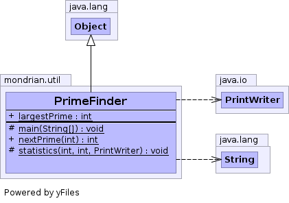

final class PrimeFinder extends Object
Choosing prime numbers as hash table capacities is a good idea to keep them working fast, particularly under hash table expansions.
However, JDK 1.2, JGL 3.1 and many other toolkits do nothing to keep capacities prime. This class provides efficient means to choose prime capacities.
Choosing a prime is O(log 300) (binary search in a list of 300 int's). Memory requirements: 1 KB static memory.

| Modifier and Type | Field and Description |
|---|---|
static int |
largestPrime
The largest prime this class can generate; currently equal to
Integer.MAX_VALUE.
|
| Modifier and Type | Method and Description |
|---|---|
protected static void |
main(String[] args)
Tests correctness.
|
static int |
nextPrime(int desiredCapacity)
Returns a prime number which is
>= desiredCapacity and
very close to desiredCapacity (within 11% if
desiredCapacity >= 1000). |
protected static void |
statistics(int from,
int to,
PrintWriter pw)
Tests correctness.
|
public static final int largestPrime
public static int nextPrime(int desiredCapacity)
>= desiredCapacity and
very close to desiredCapacity (within 11% if
desiredCapacity >= 1000).desiredCapacity - the capacity desired by the user.protected static void main(String[] args)
protected static void statistics(int from, int to, PrintWriter pw)